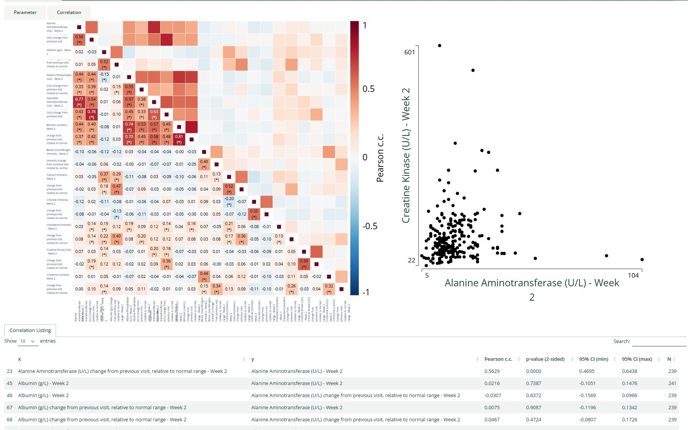
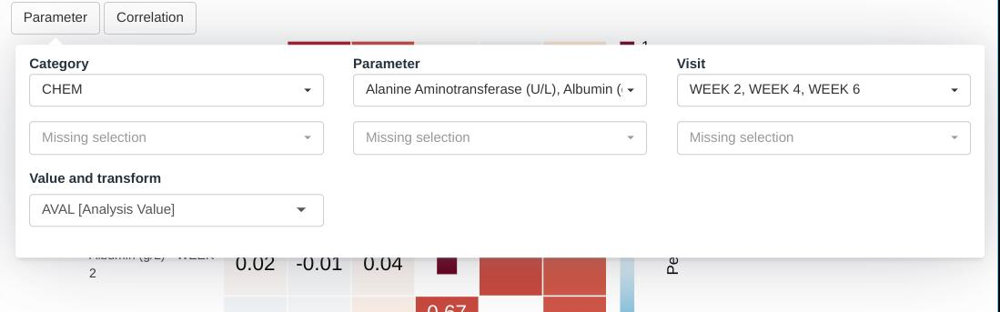
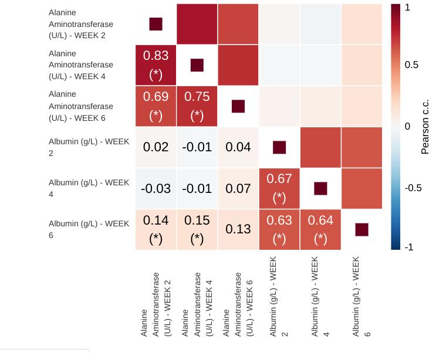

Correlation heatmap module
correlation_heatmap.Rmd
This guide provides guidance on creating Apps in DaVinci using the correlation heatmap module. Walk-throughs for sample app creation are also included to demonstrate various module-specific features.
The correlation heatmap module displays a heatmap of correlation coefficients (Pearson, Spearman) along with confidence intervals and p-values between pairs of dataset parameters over a single visit.
Pre-requisite:
 “Parameter” Term Disambiguation
“Parameter” Term Disambiguation
The guide uses the term “parameter” at several places. This term in the guide represents clinical analysis parameters and values such as laboratory values, safety values, etc as used in the clinical dataset context. This can be confused with the word parameter as used in a programming context - “parameters of a function”. Therefore, to fully disambiguate the usage in this guide:
- Parameter is used exclusively in the clinical dataset context
- Argument is used to represent parameter of a function in the programming context
Features
The correlation heatmap module offers the following features:
- Heatmap of correlations, with numerical coefficients overlayed on top and statistical significance denoted by asterisks.
- Listing expanding the correlation information with confidence intervals and p-values.
- Basic interactive drill-down scatter plot to examine combinations of pairs of parameters present on the heatmap.
This module supports bookmarking.
Module arguments
The dv.explorer.parameter::mod_corr_hm() module presents mandatory and optional function arguments to the app creator.
Mandatory Arguments
module_id: A unique identifier of type character for the module in the app.-
bm_dataset_name: The dataset that contains the continuous parameters. It expects a dataset similar to https://www.cdisc.org/kb/examples/adam-basic-data-structure-bds-using-paramcd-80288192 , 1 record per subject per parameter per analysis visit.It should have, at least, the columns passed in the optional arguments,
subjid_var,cat_var,par_var,visit_varandvalue_vars.
Refer to dv.explorer.parameter::mod_corr_hm() for the complete list of arguments and their description.
Input menus
The module offers to drop-down menus. The first one allows to select parameters and visits for the visualization. On each of its rows, the user can select a combination of parameters, belonging to one or more categories, over one or more visits. New rows appear every time a row is complete, allowing to mix parameters and visits in a flexible manner.
The final selection can be described as the union of the cartesian product of the elements selected on each row.

The second drop-down allows to pick one of the two built-in correlation methods.

Visualizations
Correlation Heatmap
This is the main plot. It consists of a diagonally symmetrical heatmap of correlation coefficients. The lower-left triangle of the heatmap displays rounded coefficient values an highlights statistically significant coefficients using asterisks. Clicking any one of the squares brings up a scatter plot of the two variables that intersect on that square.
Rounding is mathematical (round-to-even) with two decimals. Significance is based on a 2-sided, uncorrected for multiple comparisons p-value.

Scatter plot
This secondary plot provides a basic overview of the shape of the data that contributes to a particular correlation coefficient. It is intentionally limited in its intent, given that the dv.general.biomarker family of modules includes the feature-rich scatterplot and matrix of scatterplots modules.

Listings
Correlation listing
Below the graphics there is a table listing all pairs of parameter-visit combinations and their corresponding correlation coefficients, p-values, confidence intervals and number of points contributing to the calculation. Decimal values on this table are rounded (mathematical, round-to-even) to four digits of precision.
Creating a correlation heatmap application
adbm_dataset <- dplyr::mutate(
dv.explorer.parameter::adbm_example,
USUBJID = factor(USUBJID),
PARCAT1 = factor(PARCAT1),
PARAM = factor(PARAM),
AVISIT = factor(AVISIT)
)
adsl_dataset <- dplyr::mutate(
dv.explorer.parameter::adsl_example,
USUBJID = factor(USUBJID)
)
dv.manager::run_app(
data = list("DS" = list(adbm = adbm_dataset, adsl = adsl_dataset)),
module_list = list(
"Correlation Heatmap" = dv.explorer.parameter::mod_corr_hm(
"forestplot",
bm_dataset_name = "adbm",
subjid_var = "USUBJID",
cat_var = "PARCAT1"
)
),
filter_data = "adsl",
filter_key = "USUBJID"
)